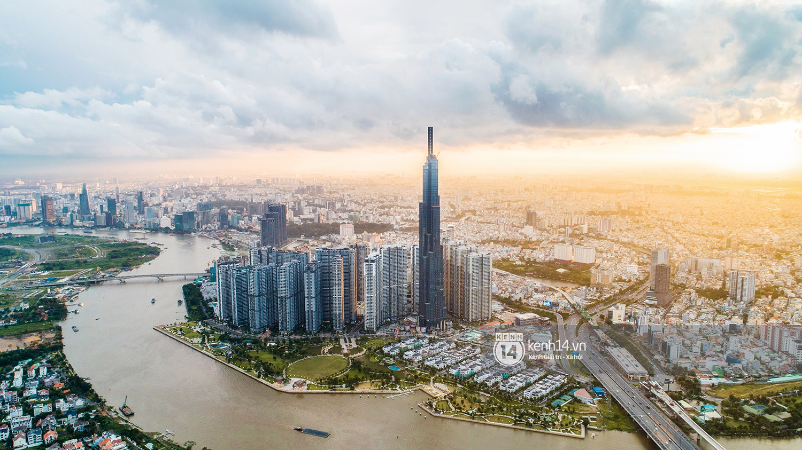

Năng động – phóng khoáng – sông nước & biển đảo.
TP.HCM là trung tâm kinh tế – văn hoá năng động với nhịp sống nhanh và nhiều trải nghiệm hiện đại. Bạn có thể khám phá các công trình biểu tượng như Nhà thờ Đức Bà, Bưu điện, Dinh Độc Lập; dạo phố đi bộ, cà phê rooftop và “food tour” khắp các quận. Thành phố này nổi bật nhờ sự đa dạng: từ các khu chợ truyền thống đến trung tâm thương mại, từ ẩm thực đường phố đến nhà hàng sang. Điểm mạnh của TP.HCM là năng lượng sôi động, nhiều hoạt động giải trí, và cảm giác “đi đâu cũng có chuyện để trải nghiệm”.
Cần Thơ là “thủ phủ miền Tây” nổi tiếng với sông nước, miệt vườn và chợ nổi. Trải nghiệm đáng thử nhất là dậy sớm đi chợ nổi Cái Răng, ngắm ghe thuyền tấp nập và thưởng thức bữa sáng ngay trên sông. Ngoài ra bạn có thể ghé vườn trái cây, tham quan nhà cổ, ăn đặc sản miền Tây như bánh xèo, lẩu mắm, cá lóc nướng trui. Điểm mạnh của Cần Thơ là văn hoá sông nước đặc trưng, con người thân thiện và nhịp sống dễ chịu, “đi một lần là muốn quay lại”.
Bến Tre nổi tiếng với những rặng dừa xanh mát và trải nghiệm du lịch sinh thái nhẹ nhàng. Du khách thường đi thuyền trên kênh rạch, ghé các lò kẹo dừa, thưởng thức nước dừa tươi, tham quan vườn trái cây và trải nghiệm cuộc sống miệt vườn. Không khí ở Bến Tre yên bình, phù hợp để “đổi gió”, rời xa ồn ào phố thị. Điểm mạnh của Bến Tre là trải nghiệm địa phương chân thật, ẩm thực dân dã và cảm giác thư giãn rất rõ — đúng kiểu miền Tây hiền hoà.
Tây Ninh nổi bật với núi Bà Đen — điểm đến vừa có cảnh đẹp, vừa mang màu sắc tâm linh. Bạn có thể đi cáp treo, săn mây, ngắm toàn cảnh đồng bằng và trải nghiệm không khí mát mẻ trên núi. Ngoài ra Tây Ninh còn có các điểm tham quan văn hoá, ẩm thực đặc trưng như bánh tráng phơi sương, muối tôm. Điểm mạnh của Tây Ninh là chuyến đi ngắn nhưng nhiều trải nghiệm, hợp cho cuối tuần: vừa “xả stress”, vừa có ảnh đẹp.
Phú Quốc là thiên đường biển đảo với bãi cát trắng, nước trong và hoàng hôn cực đẹp. Bạn có thể tắm biển, đi tour đảo, lặn ngắm san hô, khám phá làng chài hoặc check-in các điểm nổi tiếng. Ẩm thực ở đây cũng hấp dẫn với hải sản tươi, gỏi cá trích, bún quậy. Điểm mạnh của Phú Quốc là trải nghiệm nghỉ dưỡng “đúng nghĩa”: vừa thư giãn, vừa vui chơi, hợp cả đi gia đình lẫn couple. Nếu cần một chuyến đi để nạp lại năng lượng, Phú Quốc là lựa chọn rất đáng.